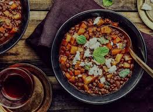
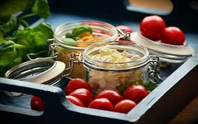
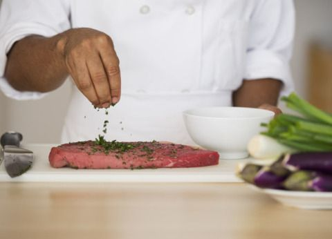
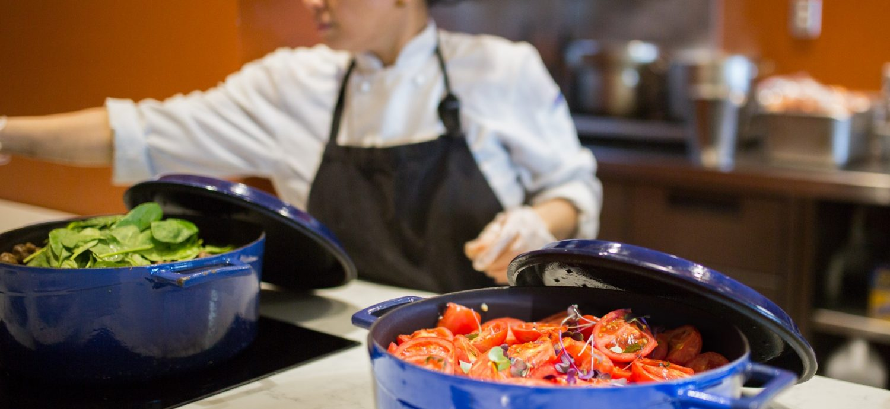
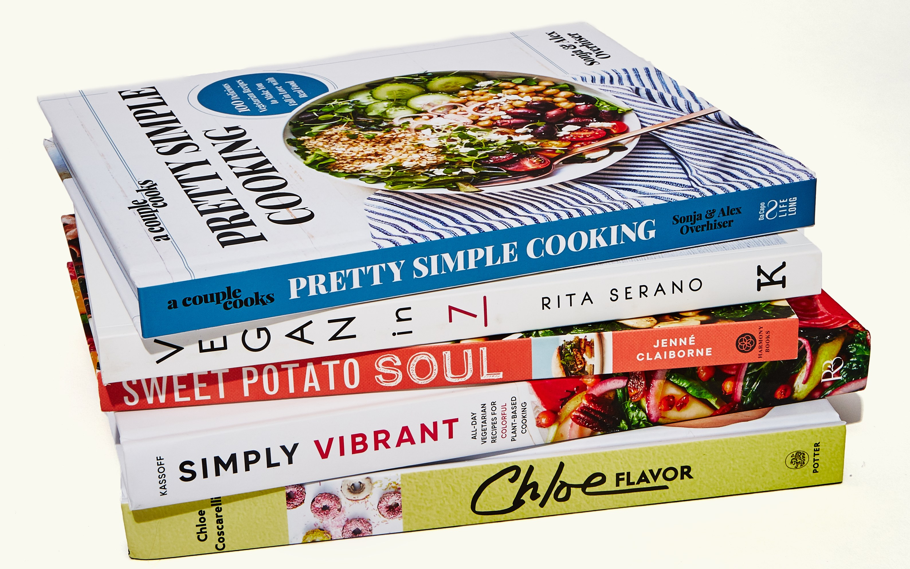

About me
From the beginning, Our Best Bites has been a place for mostly simple, sometimes fussy, always seasonal recipes. This continues to be true, though more and more I value simplicity over anything else. You can reach me with questions, comments, or suggestions at anika.t09@gmail.com..
5 Quick Things About Me
About My Diet plan:
1. I don’t follow any specific diet — Whole30, vegan, vegetarian, paleo, Atkins, gluten-free, low-carb, keto, etc. I believe in balance and moderation. I believe in eating humanely raised meats. I believe in eating seasonally, and supporting local, sustainable agriculture within your means. I love nothing more than a simple roast chicken, a BLT, and a griddled burger, but more and more, I find myself drawn to vegetarian cooking.
 About my Education & Career:
2. Cooking seasonally is of utmost importance to me. I subscribe to a farmshare, the Roxbury Farm CSA (Community Supported Agriculture—more on that here), nearly year round. I love the weekly challenge of using a box of vegetables to its fullest potential and helping others do the same.
3. Immediately after college, I attended cooking school in Philadelphia, then spent five years working in catering and restaurant kitchens in and outside of the city. I spent two years at Fork, where I ultimately was the sous chef for Thien Ngo.
 4.For several years, I contributed weekly to Food52, writing about weeknight cooking. Alexandra’s Kitchen has twice been nominated for a Saveur Blog Award in the Most Inspired Weeknight Cooking category, and in 2018.
My hobbies:
5.I love cookbooks. My library contains over 500 books. It continues to grow.
.jpg)
About My Personal Life:
Currently living in Bangladesh with my parents & siblings.